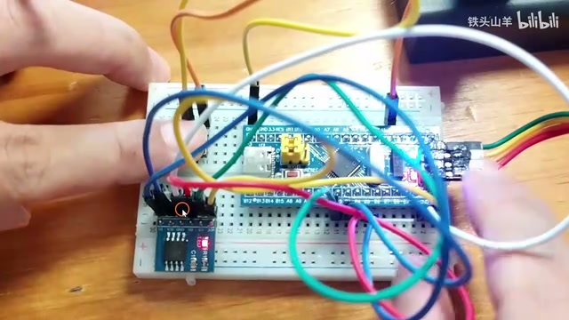
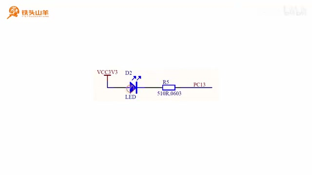
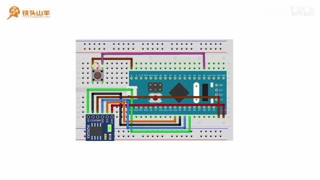
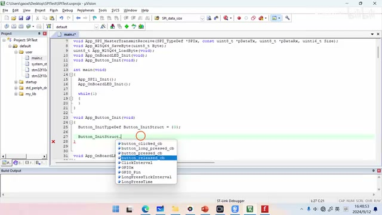
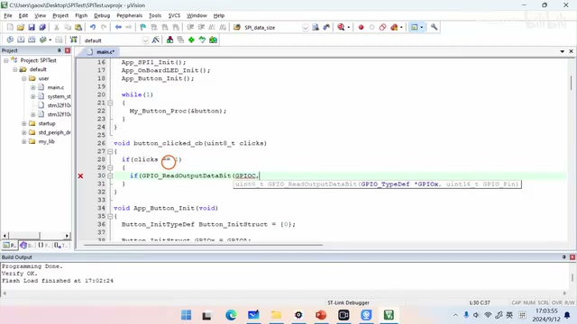
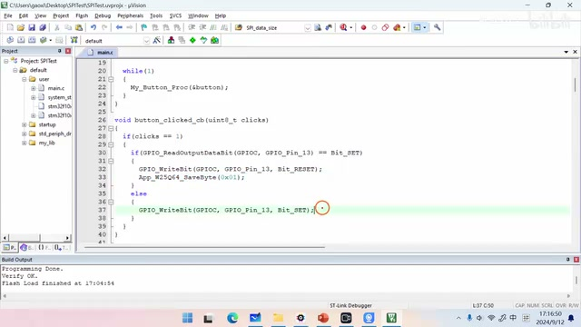
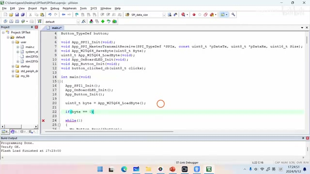
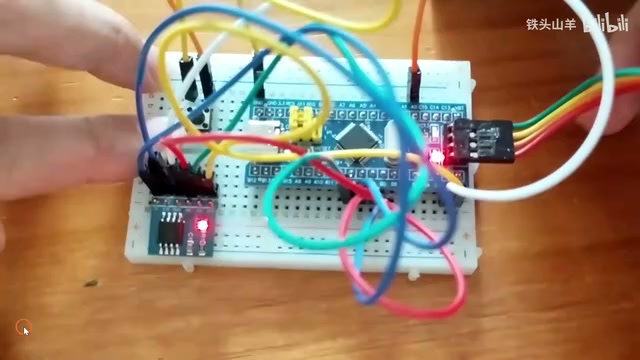

P032 · 5.8 （SPI）W25Q64实验(下)¶
实验目标：按钮切换并记住 LED 状态¶
各位同学好，我是铁头山羊。今天学习第五章第八节，接着上期 W25Q64 实验的上半部分，完成下半部分。课程所需材料都在开发套件包中；购买套件可以获得课件和源码，也可以加入答疑群交流。
这次要做的效果是：按电路板上的按钮，切换最小系统板板载 LED 的亮灭。演示中 LED 起初熄灭，按左边按钮后点亮，再按一次熄灭，之后仍可继续切换。

按下左侧按钮后，最小系统板上的板载 LED 点亮。 · 原片 00:44
在按钮切换的基础上，再用左下方的 W25Q64 模块保存板载 LED 当前状态：亮时写入 1，灭时写入 0。W25Q64 是 Flash，掉电后数据不会丢失，因此重新上电时可以恢复之前的状态。演示里先让 LED 点亮，断电再上电后仍然点亮；再用按钮将它熄灭，断电重启后仍然熄灭。这说明保存的状态能跨越断电保留。演示先断电重启并确认 LED 仍亮，随后用左侧按钮熄灭 LED，再次断电上电，确认它仍熄灭。
视频把实验分为五部分：初始化板载 LED、初始化按钮、使用按钮切换 LED 亮灭、用 W25Q64 保存 LED 当前状态，以及开机时恢复 LED 状态。下面先从 LED 初始化开始。
本节是在前一次已完成的 W25Q64 实验基础上继续做下半部分。演示还交代了材料来源：课程所需材料包含在开发套件包里，扫描画面中的二维码可以进入店铺购买；购买套件后可获得本课程课件、源码，并能加入答疑群直接交流。开始时他用按钮切换板载 LED，先展示熄灭状态，按左侧按钮点亮，再按一次熄灭，并说明可以持续按它改变亮灭。
初始化板载 LED¶
板载 LED 的电路图采用开路接法，LED 阴极接到单片机 PC13。因此要把 PC13 初始化成输出开漏模式。
打开上期编写的 SPI test 工程，在 main.c 中删除之前的测试代码和全局变量 A。然后封装 App_OnBoard_LED_Init 函数来初始化板载 LED，并在 main 中调用。

板载 LED 的阴极连接到单片机 PC13。 · 原片 02:39
初始化函数 App_OnBoard_LED_Init 中先开启 GPIOC 时钟，再声明并配置 GPIO 初始化结构体：引脚选择 GPIO_Pin_13，模式选择输出开漏（GPIO_Mode_Out_OD），最大输出速度设为 2 MHz 即可，不必太高。最后调用 GPIO_Init 初始化 PC13。把函数实现在 main 方法下面，并在 main 中调用，第一部分就完成了。
板载 LED 大家已经比较熟悉，先看它的电路图，再据此决定引脚模式。随后打开上期的 SPI test 工程文件，进入 main.c，把之前用于测试的代码删掉（演示中指出了两行），前面声明的全局变量 A 也一并删除。之后才在 main 下面封装 LED 初始化函数，并在主函数里调用。
接入按钮并准备驱动¶
接下来初始化按钮，用它切换板载 LED。W25Q64 模块已经按上一期的接法连接好，这次只需在现有电路上增加一枚按钮：按钮一端接地，另一端接单片机 PA0，由 PA0 驱动。接线时要注意按钮有方向，安装时引脚要朝向图示的两侧，不能把方向弄错。

按钮一端接地，另一端连接到 PA0；安装方向需按图示放置。 · 原片 05:15
接线后开始编写按钮驱动。使用之前封装的按钮库，先引用 button.h，声明 Button_TypeDef 类型的按钮变量，并准备初始化函数。初始化结构体要先赋初值 0；这一部分先填 GPIO 端口和引脚，其他回调函数与时间参数稍后再设置。
接线时先在已有 W25Q64 电路图上增加按钮。按钮从套件中取出，一端接地，另一端连到单片机 PA0；接好后，他再次提醒按钮有方向，两个引脚应朝向图中所示两边，方向不能装错。之后在代码里引用之前封装好的 button.h，声明按钮变量，并新建按钮初始化函数；此处结构体先清零，GPIO 端口和引脚先填好，其余设置留到后面处理。
完成按钮初始化¶
按钮初始化函数中，声明 Button_InitTypeDef 类型的变量，例如命名为 Button_InitStruct，并将它初始化为 0；这一步不能省略。结构体成员比较多，上面的四项是回调函数，另外几项与按钮时间参数有关，这些之后再补，本段先处理 GPIO 配置。

按钮初始化结构体包含回调函数和时间参数等成员。 · 原片 07:42
把 GPIO 端口设为 GPIOA、引脚设为 GPIO_Pin_0，然后调用 My_Button_Init(&button, &Button_InitStruct)，第一个参数传按钮变量，第二个参数传初始化结构体的地址。最后在 main 中调用初始化函数，并在 while 循环中持续调用按钮的进程函数，按钮库才能处理按键事件。
按钮变量名可以自行取，例如 button。先声明初始化函数原型，再放到 main 下面实现；随后在 main 调用初始化，并在 while 循环中调用按钮进程函数，持续处理按键并触发回调。
初始化结构体中有多个成员：上面的四项是回调函数，另外还有与按键时间参数有关的成员，这些暂时不填。由于按钮连接 PA0，端口选 GPIOA、引脚选 GPIO_Pin_0。随后调用 My_Button_Init，第一个实参是按钮变量，第二个实参是刚填好的初始化结构体地址。主函数先运行按钮初始化；进入循环后还要执行 My_Button_Proc(&button)，让按钮库不断处理按键。
单击按钮时翻转 LED¶
要用按钮切换 LED，只需编写回调函数，在回调函数里改变 LED 亮灭，再在按钮初始化时把回调函数作为参数传入。这里补上此前漏写的 My_Button_Proc(&button)：它应放在 while 循环里。

回调函数读取 PC13 输出状态，并写入相反电平以翻转 LED。 · 原片 10:01
声明回调函数原型，例如 button_click_cb(uint8_t clicks)，再复制到 main 后实现。clicks 表示点击次数，可区分单击、双击等情况；判断 clicks == 1 时才翻转 LED。读取 PC13 上次输出的数据：如果上次为 Bit_SET，本次写 Bit_RESET；否则写 Bit_SET。也就是上次为 1 就写 0，上次为 0 就写 1。再把回调函数填入按钮初始化结构体的回调项。
随后按左上角第二个按钮编译，结果没有错误或警告，再将程序下载到单片机。按复位键后反复按按钮，LED 会在熄灭与点亮之间切换，第三部分完成。
回调函数有一个参数 clicks，用来表示点击次数，按键库据此区分单击、双击等事件；这里仅在值等于 1 时执行翻转。读取上一次向 PC13 输出的数据，如果结果为 Bit_SET 就写 Bit_RESET，否则写 Bit_SET，两种情况下都与上次输出相反。最后把这个回调函数作为初始化结构体的回调参数传入。补上循环中的按钮进程调用后，编译并下载，复位单片机，再连续按按钮检查亮灭是否交替。
按状态变化保存一个字节¶
第四部分是在按钮改变 LED 状态时，把当前状态保存到 W25Q64。前面已经写好两个函数：App_W25Q64_SaveByte 用于把一个字节写入 Flash，另一个函数用于读出这个字节。现在先使用保存函数，在刚才的按钮回调函数中，根据 LED 状态变化写入对应的值。

LED 点亮后向 W25Q64 保存 0x01，熄灭后保存 0x00。 · 原片 13:11
回顾回调函数：先判断当前 LED 状态。如果 LED 熄灭，就把它点亮，然后调用 App_W25Q64_SaveByte(0x01) 保存 1，表示点亮；否则 LED 当前是亮的，就将它熄灭，然后保存 0x00，表示熄灭。这些调用放在回调函数已有的条件分支里：点亮 LED 后保存 0x01，熄灭 LED 后保存 0x00。这样写入的是本次切换后的状态，供下一部分开机时调用读取函数取回。
在保存前，回调函数先根据 PC13 当前输出判断 LED 状态。若当前输出为复位电平、LED 熄灭，就将 PC13 置位点亮它，再写入 0x01；若当前输出为置位电平、LED 点亮，就将 PC13 复位熄灭它，再写入 0x00。所以 Flash 中保存的是改变后的结果，而不是改变前的状态。读字节函数此处先不调用，留到上电恢复部分使用。
上电时从 Flash 恢复状态¶
第五部分是把保存的数据读出来并恢复 LED。当前 LED 亮时，Flash 保存的是 0x01；灭时保存的是 0x00。断电后重新上电，单片机程序会从头执行，所以在初始化完成后、进入 while 循环之前，先读取 Flash 中保存的字节。读到 0 就熄灭 LED；读到 1 就点亮 LED。

启动时读取 Flash 字节，并据此设置 PC13，恢复此前的 LED 状态。 · 原片 14:27
具体做法是调用 App_W25Q64_LoadByte，将读出的字节放入变量中。如果变量等于 0，说明断电前 LED 熄灭，调用 GPIO 写入函数向 PC13 写入 Bit_SET 来熄灭 LED；否则说明断电前 LED 点亮，向 PC13 写入 Bit_RESET 来点亮它。这个判断利用 W25Q64 掉电后数据仍保留的特性：程序重新从头执行时，先完成 LED、Flash 和按钮的初始化，再读取字节、设置 PC13，最后才进入循环处理按钮。
把程序流程连起来看：按钮回调在亮灭发生变化时分别保存 1 或 0；断电后这些 Flash 数据不丢失。重新上电的瞬间，单片机程序从头开始执行，因此先读取 Flash 中保存的字节。读出 0 说明断电前 LED 熄灭，就通过 PC13 的 Bit_SET 输出让它熄灭；否则说明之前点亮，就写 Bit_RESET 让它点亮。完成初始化和恢复之后，程序才进入 while 循环继续响应按钮。
编译、下载并验证掉电保持¶
编译没有错误或警告后，将程序重新下载到单片机。按复位键，先观察到 LED 点亮；按左上角按钮将它熄灭，再给整个电路断电并上电，LED 仍然熄灭。反复断电上电，效果稳定。之后再按按钮点亮 LED，重复断电上电后它仍保持点亮。这说明实验成功，W25Q64 中保存的状态在重新上电后正确恢复。

连续断电再上电后，LED 继续保持按钮设置的熄灭状态。 · 原片 15:20
这个实验比较难，有疑问可以到答疑群交流。感谢收看，我是铁头山羊，我们下期再见。
测试时先按单片机复位按钮，观察到 LED 点亮；按左上角按钮使其熄灭，然后切断整个电路的电源并重新上电，检查 LED 仍熄灭。再重复几次断电和上电，结果保持稳定。接着再按左上角按钮把 LED 点亮，断电、上电多次，灯也一直保持点亮。通过两个方向的实物测试，确认存储和开机恢复功能都有效，实验成功。